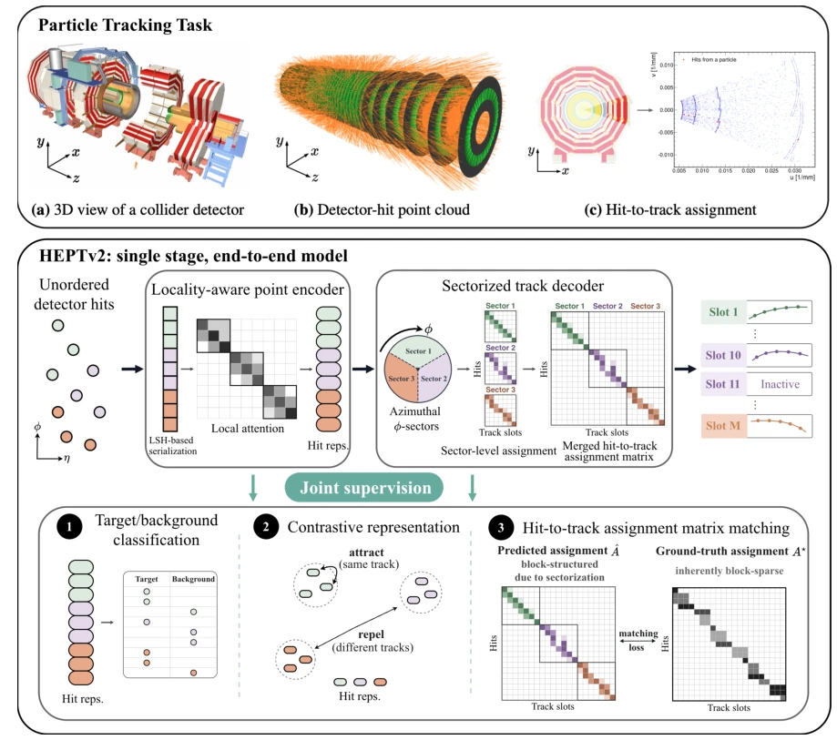

This paper transforms particle tracking from "building blocks" to "end-to-end direct output". HEPTv2 claims to be the first single-stage end-to-end efficient Point Transformer, which sounds very compelling. It indeed optimizes the previous hybrid of GNN and Transformer, no longer relying on post-hoc clustering like DBSCAN, directly predicting the hit-to-track matrix. In results, efficiency on TrackML is 98.6%, latency 15ms, 50 times faster than ACORN-GNN, these numbers are indeed impressive. However, do not be too optimistic, this method still runs on simulated data like TrackML, noise and geometric complexity in the real LHC environment might not be that easy to deal with. Moreover, although it is fast, it relies on LSH serialization; if the detector geometry changes, the hash table still needs parameter tuning, and generalization is questionable. Overall, it is a good engineering optimization, but do not expect it to directly solve all physical problems of HL-LHC, after all, physical laws cannot be fully fitted solely by Attention.
The core pain point is the combinatorial explosion caused by high pile-up under HL-LHC. Traditional CKF methods are difficult to parallelize and accelerate [11, 12]. GNN methods such as ACORN-GNN [1] and OC-GNN [21], although performing well, have auxiliary stages like graph construction, edge pruning, and segmentation that consume huge time, becoming a bottleneck [13, 20]. Transformers like HEPT [2] introduce LSH to accelerate attention, but still require external clustering (such as DBSCAN), leading to inability for end-to-end optimization, and clustering may introduce fake tracks [2]. Two-stage MF [32] is multi-stage training, lacking joint optimization. HEPTv2 aims to eliminate these intermediate steps, achieve true end-to-end reconstruction, and solve the trade-off between computational efficiency and accuracy.
HEPTv2 contains two core modules: Locality-aware Point Encoder and Sectorized Track Decoder. In terms of data flow, unordered detector hit points (hits) first enter the encoder. The encoder uses LSH for serialization in the detector coordinate space (η, ϕ), mapping spatially proximate points to a 1D sequence, then applies local-window attention, maintaining linear complexity. This preserves geometric structure better than doing LSH in latent space. In the decoder part, it maintains M learnable track slots, directly predicting the M×N hit-to-track assignment matrix. To solve local ambiguity under high pile-up, the decoder divides the event into k ϕ sectors (default k=3), solving sub-problems separately then merging. Training adopts joint supervision: the encoder learns discriminative features via InfoNCE and background classification loss, the decoder directly optimizes the assignment matrix via Hungarian matching and Focal/Dice loss. This end-to-end design avoids error accumulation brought by traditional clustering.

Fig. 1 | Overview of charged-particle tracking and the HEPTv2 pipeline. Top, adapted in part from [1, 2], a collider detector records sparse measurements, a high-pileup event produces a large unordered hit cloud, and reconstruction associates hits into particle trajectories. Bottom, our HEPTv2 pipel
Tested on the TrackML benchmark, comparing ACORN-GNN [1], OC-GNN [21], HEPT+DBSCAN [2], Two-stage MF [32]. Metrics are Double Majority (DM) efficiency and Fake Rate. HEPTv2 achieves 98.6% DM, fake rate 0.8%. Compared to the strongest GNN baseline ACORN-GNN, DM improves by 1.1%, latency reduces by 52 times; compared to HEPT+DBSCAN, DM improves by 9% and latency reduces by 7 times. Ablation studies show that sectorized decoding (3 sectors) improves significantly compared to full event decoding, and encoder auxiliary supervision (Encoder Supervision) is crucial for performance. Latency and memory usage grow linearly with the number of hits, still maintaining low resource usage under 5×10^5 hits.